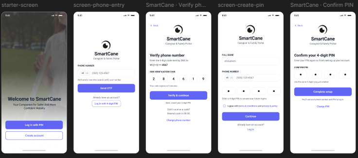

Cebu Eastern College • Capstone 2026
Figma
JavaScript
Antigravity AI
Tailwindcss
IoT Ultrasonic Sensor
SmartCane: Assistive Mobility Innovation
An assistive mobility system leveraging sensor integration, tactile feedback, and Antigravity AI to empower visually impaired individuals with independent navigational safety.
My Project Contribution
Led high-fidelity UI/UX design and mobile user flows in Figma; engineered client-side JavaScript interactions and responsive layouts with Tailwind CSS; coordinated obstacle detection logic and intelligent feedback via the Antigravity AI framework.